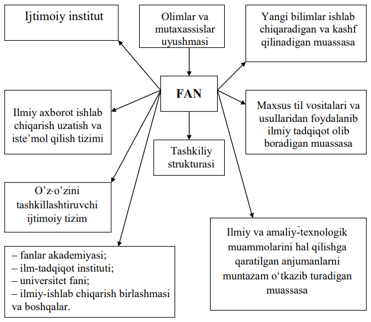

<!doctype html>
<html lang="en">

<head>
    <meta charset="utf-8">
    <meta name="viewport" content="width=device-width, initial-scale=1, shrink-to-fit=no">
    <meta name="description" content="">
    <meta name="author" content="">
    <meta name="generator" content="">
    <title>Books App</title>

    <!-- manifest meta -->
    <meta name="apple-mobile-web-app-capable" content="yes">

    <!-- Favicons -->
    <link rel="apple-touch-icon" href="../../assets/img/favicon180.png" sizes="180x180">
    <link rel="icon" href="../../assets/img/favicon32.png" sizes="32x32" type="image/png">
    <link rel="icon" href="../../assets/img/favicon16.png" sizes="16x16" type="image/png">

    <!-- Google fonts-->

    <link rel="preconnect" href="https://fonts.googleapis.com">
    <link href="https://fonts.googleapis.com/css2?family=Nunito:wght@400;600;700&display=swap" rel="stylesheet">
    <link href="https://fonts.googleapis.com/css2?family=Open+Sans:wght@300;400;600;700&display=swap" rel="stylesheet">

    <!-- bootstrap icons -->
    <link rel="stylesheet" href="https://cdn.jsdelivr.net/npm/bootstrap-icons@1.5.0/font/bootstrap-icons.css">

    <!-- date rage picker -->
    <link rel="stylesheet" href="../../assets/vendor/daterangepicker/daterangepicker.css">

    <!-- swiper carousel css -->
    <link rel="stylesheet" href="../../assets/vendor/swiperjs-6.6.2/swiper-bundle.min.css">

    <!-- style css for this template -->
    <link href="../../assets/css/style.css" rel="stylesheet" id="style">
</head>

<body class="body-scroll" data-page="stats">

    <!-- loader section -->
    <div class="container-fluid loader-wrap">
        <div class="row h-100">
            <div class="col-10 col-md-6 col-lg-5 col-xl-3 mx-auto text-center align-self-center">
                <div class="loader-cube-wrap loader-cube-animate mx-auto">
                    
                </div>
                <p class="mt-4">It's time for track budget<br><strong>Please wait...</strong></p>
            </div>
        </div>
    </div>
    <!-- loader section ends -->

    <!-- Begin page -->
    <main class="h-100">

        <!-- Header -->
        <header class="header position-fixed">
            <div class="row">
                <div class="col align-self-center text-center">
                    <div class="logo-small">
                        
                        <h5>Books-app</h5>
                    </div>
                </div>

            </div>
        </header>
        <!-- Header ends -->

        <!-- main page content -->
        <div class="main-container container">
            <!-- extra expense  -->
            <div class="row mb-3">
                <div class="text-center">
                    <h6 class="title">1-MAVZU. «ILMIY TADQIQOT METODOLOGIYASI» FANINING MAQSADI VA VAZIFALARI</h6>
                </div>
                <div class="text-center">
                    <h6>REJA</h6>
                </div>
                <ol class="ml-5">
                    <li>Fan-bilim, faoliyat va institut sifatida.</li>
                    <li>Ijodiy jarayonning jamiyat taraqqiyotidagi o‘rni. </li>
                    <li>Ilmiy tadqiqot metodologiyasi </li>
                    <li>«Ilmiy tadqiqot metodologiyasi» fanining predmeti, maqsadi va vazifalari</li>
                </ol>
            </div>
            <div class="row">
                <div class="col-md-12">
                    <p class="text-muted">
                        &emsp; <strong>1.Fan-bilim, faoliyat va institut sifatida.</strong><br>
                        &emsp;Fan - inson faoliyati sohasi bo‘lib, uning vazifasi borliq haqidagi 
                        obyektiv bilimlarni ishlab chiqish va nazariy tomondan tizimlashtirish 
                        hisoblanadi. Fanning asosiy maqsadi –xolis dunyoni ya’ni borliqning 
                        nazariy aksini bilish va tabiatga jamiyat uchun foydali natijalar olish 
                        maqsadida ta’sir ko‘rsatishdan iboratdir. 
                        <br>&emsp;Fan - bu rivojlanuvchi, o‘suvchi bilim tizimi, insonning atrof olamni 
                        surunkali o‘zlashtirishiga, o‘zini qurshagan voqyelikning borlig‘i haqida 
                        aniq va teran axborot olishi, bunday axborotni saqlash, qayta ishlash va 
                        undan foydalanishiga yunaltirilgan ijtimoiy ongning alohida shaklidir. Fan 
                        ilmiy tushuncha, tamoyil, aksioma, ilmiy qonun, nazariya, faraz, empirik 
                        ilmiy fakt, uslub, usul va tadqiqot yo‘llari tarzidagi uzluksiz rivojlanib 
                        boruvchi bilimlar tizimidir. Shuningdek, uni bilimlarning mazkur 
                        tizimlarini yaratish va rivojlantirishga yo‘naltirilgan insonlarning ilmiy 
                        faoliyati, ijodini ilmiy mehnat obyektlari, vositalari va faoliyat sharoitlari 
                        bilan ta’minlovchi muassasa sifatida keng ma’noda tushunish maqsadga 
                        muvofiqdir. 
                        <br>&emsp;
                        Bakalavriatni bitirib magistraturaga o‘qishga kirgan magistrantlar 
                        «Katta fan» deb atalgan dargohga ilk qadam qo‘yadilar. Undagi muammolar 
                        va bilimlarni o‘rganish tarzi ta’lim tizimining quyi bosqichlarida mavjud 
                        bo‘lgan ilmlarni o‘zlashtirish shakllaridan nima bilan farq qiladi? Mazkur 
                        savollarni ko‘rib chiqishdan maqsad fan va ilmiy tadqiqot to‘g‘risida 
                        konkret tasavvur hosil qilishdir. Ma’lumki, fan sohasida endigina faoliyat 
                        ko‘rsatayotgan yosh mutaxassis yetarli darajada bilimlar majmuiga ega 
                        bo‘lishi kerak. Bunday majmuani tashkil qilgan bilimlar banki quyi ta’lim 
                        bosqichlarida yaratildi. 
                        <br>&emsp;
                        Xususan, maktabda o‘quvchilar tabiat, jamiyat va inson olami, 
                        atrofdagi turli hodisalar va qonuniyatlar haqida ilmiylik xislatiga ega 
                        bo‘lgan dastlabki tayanch tushuncha va tasavvurlarni o‘zlashtirib oladilar.
                        Bakalavriat bosqichida talaba tanlab olgan fan yo‘nalishiga doir asosiy 
                        tushunchalar, g‘oyalar va tamoyillarni o‘rganib oladi, uning ongida nazariya 
                        va ular birligini namoyon etgan tizimli bilim shakllanadi. Bunday bilim 
                        nisbatan sodda struktura va xossalarga ega bo‘lgan tuzilmalarni o‘rganish 
                        va tushunish, hayotimizga kirib kelayotgan yangi buyumlar, texnik vosita 
                        va moslamalardan foydalanish imkoniyatini beradi. 
                        <br>&emsp;
                        Shu bilan birga o‘quvchi ham, bakalavr ham oldin yaratilgan va 
                        darsliklarga kiritilgan tayyor bilimlar bilan ishlaydi, o‘qish jarayonida 
                        elementar uslubiy qoida va tamoyillarga tayanib u predmetga (fanga) oid 
                        savollar ustida mulohaza yuritadi. Magistratura ta’lim tizimida «nima», 
                        «nima uchun», «qanday qilib» kabi faktual, nazariy va amaliy-texnologik 
                        masalalar ilmiy muammoga aylanadi. Buning ma’nosi shuki, endi 
                        izlanishda u yoki bu hodisa qanday sharoitda, nima sabablarga ko‘ra sodir 
                        bo‘ladi, belgilovchi xossalar qanday qiymatlarga ega, olingan natijani 
                        texnologiyada tatbiq qilish istiqboli bormi, kabi murakkab nazariy va amaliy 
                        muammolar bilan shug‘ullanishga to‘g‘ri keladi. Mana shunday 
                        muammolar ustida ishlash fan sohasida amalga oshadi.
                        Agar maktab, kollejda ta’limning bakalavriat bosqichida talabalar 
                        oldin ishlab chiqilgan va tayyor shaklga keltirilgan ilmni o‘zlashtirsalar, 
                        magistraturada hal etilmagan, ya’ni hodisa yoki qonuniyatni ochish,
                        texnologik tuzilma loyihasini ishlab chiqish imkoniyatini beradigan 
                        muammolar o‘rganiladi. 
                        <br>&emsp;
                        To‘g‘ri, o‘quvchi yoki bakalavr olimpiada va to‘garaklarda 
                        qatnashish, hamda o‘z ustida muntazam ishlash davomida intellektual 
                        salohiyati va ijodiy qobiliyatini o‘stirishi mumkin. Lekin, bu holat yuqorida 
                        bildirilgan mulohazani rad etmaydi, aksincha, fan dargohiga qadam qo‘ygan 
                        olimpiada sovrindori yoki stipendiant kelajakda iqtidorli tadqiqotchilar 
                        safini to‘ldiradi. 
                        <br>&emsp;
                        Fan xususida mulohaza yuritadigan bo‘lsak, birinchi ko‘zga 
                        tashlanadigan narsa, bu uning jamoaviy xislatidir. Fanda tadqiqotchilar 
                        jamoasi faoliyat ko‘rsatadi. Bunday jamoada turli vazifalarni 
                        (eksperimentni tayyorlash va va o‘tkazish, ma’lumotlarni to‘plash va qayta 
                        ishlash, natijalarni umumlashtirish va h.k.) bajarishda namoyon bo‘ladigan 
                        mehnat taqsimoti mavjud. Ilmiy jamoani faoliyati bir qator huquqiy, 
                        ijtimoiy, malakaviy va ma’naviy qonun-qoidalar asosida tartibga solinadi. 
                        Shularni hisobga olib fan tushunchasini quyidagicha ta’riflash mumkin: fantadqiqotchilar faoliyatini tashkillashtiradigan, yangi ilmiy bilimlar ishlab 
                        chiqaradigan, olingan natijalarni amaliyot va texnologiyaga joriy qiladigan 
                        ijtimoiy institutdir (muassasasidir). 
                        <br>&emsp;
                        Fan o‘zagini yangi bilimlar ishlab chiqarishga qodir bo‘lgan 
                        tadqiqotchilar tashkil qiladi. Tadqiqotchilar maxsus til, eksperiment va 
                        ilmiy usullardan foydalanish jarayonida innovasiyaga olib keladigan yangi 
                        natijalarni qo‘lga kiritadilar, kashf qiladilar, voqyelikdagi narsa va 
                        hodisalarni tushuntirib beradigan ta’limotlar, g‘oyalar va nazariyalarni 
                        ishlab chiqaradilar, hosil bo‘lgan bilimlarni texnologik loyiha va modellar 
                        ko‘rinishida amaliyotga tadbiq qiladilar. 
                        <br>&emsp;
                        Fanning muhim tomonini ilmiy axborot ishlab chiqish va iste’mol 
                        qilish, tadqiqot vositalari va usullarini yaratish, olingan natijalarni turli 
                        darajadagi anjumanlarda muhokama qilish tashkil qiladi. 
                        Fanning strukturasi va asosiy xislatlari 1-rasmda ifodalangan.
                        Shunday qilib, fan ko‘p strukturali ijtimoiy institut bo‘lib, unda 
                        jamiyat uchun zarur bo‘lgan yangi bilimlar ishlab chiqariladi, olim va 
                        mutaxassislar faoliyati tashkil qilinadi, ilmiy axborot ishlab chiqiladi va 
                        iste’mol qilinadi, maxsus fan tili, tadqiqot vositalari va usullari yaratiladi, 
                        dolzarb ilmiy va amaliy-texnologik muammolar muhokama qilinadigan 
                        anjumanlar muntazam tashkil qilinadi.
                        <br>&emsp;
                        Fan o‘zining ijtimoiy vazifalarini bajarish, shu orqali jamiyat 
                        taraqqiyotiga munosib hissa qo‘shishi uchun ma’lum strukturaga ega 
                        bo‘lishi, uning strukturasiga kirgan tuzilmalar samarali faoliyat 
                        ko‘rsatishlari kerak. Shunday strukturalar qatoriga ilmiy-pedagog kadrlar 
                        tayyorlash tizimlari, ilmiy-tadqiqot muassasalari, ilmiy-texnik ta’minot 
                        bo‘limlari, ilmiy axborot kommunikasiyalari va boshqalar kiradi. <br>
                        
                        <div class="text-center">1-rasm</div> <br>
                        Shu bilan birga, yana bir muhim omilni inobatga olishimiz zarur. 
                        Ya’ni, fan ma’lum ijtimoiy muhitda rivojlanadi. Bu yerda birinchi navbatda 
                        davlatni fanga nisbatan olib borayotgan siyosati, yaratilayotgan sharoitlar, 
                        moddiy va ma’naviy ta’minot darajasi ko‘zda tutilmoqda. Mamlakatda 
                        ijtimoiy-iqtisodiy islohatlar amalga oshirilayotgan sharoitida Respublika 
                        Prezidenti, davlat organlari tomonidan fanning tashkiliy strukturasi, oliy 
                        malakali ilmiy kadrlar tayyorlash tizimi qanchalik zamon talabiga javob 
                        berishiga qarab ularni takomillashtirishga qaratilgan farmonlar va qarorlar 
                        qabul qilinmoqda.
                        <br>&emsp;
                        Fanning tashkiliy strukturasini shakllanishida ichki omillar va 
                        jarayonlar katta rol o‘ynaydi. Uning strukturasida ilmiy intellektual faoliyat 
                        sohasidagi mehnat taqsimoti o‘z ifodasini topadi. Xususan, bir sohada 
                        amaliy- loyihaviy va texnologik muammolar birinchi o‘rinda turadi. Shunga 
                        muvofiq ilmiy-amaliy va texnologiyaga oid izlanishlar loyihaviy tadqiqot 
                        institutlarida, yirik korxonalar tasarrufida bo‘lib laboratoriyalarda amalga 
                        oshiriladi. Fanlar Akademiyasi va universitetlarda ko‘proq fundamental 
                        nazariy tadqiqotlar olib boriladi. Bunday tarmoqlanish va sohaviy 
                        ixtisoslanish ilmiy tadqiqotlar samaradorligini keskin oshirish imkoniyatini 
                        beradi.<br>&emsp;
                        Fanning tashkiliy strukturasiga tarixan yondashsa, unda Platon 
                        akademiyasi, Aristotel liseoni, Aleksandriya shahridagi Muzeon 
                        (mill.avval. III asrda asos solingan), Ma’mun akademiyasi, Mirzo Ulug‘bek 
                        akademiyasi, XVII asrdan boshlab Yevropada vujudga kelgan akademiyalar 
                        va universitetlardagi bo‘limlar, laboratoriyalarni qayd qilish mumkin.<br>&emsp;
                        Aytib o‘tganimizdek, fanning tashkiliy strukturasi bilan olib 
                        borilayotgan tadqiqotlarning shakli va turlari o‘rtasida aloqadorlik mavjud. 
                        Oliy o‘quv yurtlarda tadqiqot yo‘nalishi va mavzularni tanlash, izlanishlarni 
                        olib borish, olingan natijalarni birlamchi baholash kafedralarda, ularga 
                        qarashli laboratoriyada amalga oshiriladi. Sohaviy fundamental va maqsadli 
                        kompleks ilmiy tadqiqotlar Fanlar akademiyasi, ilmiy-tadqiqot institutlarda 
                        olib boriladi. Yirik korporasiya va firmalar qoshida mavjud bo‘lgan ilmiytexnik bo‘limlarda asosan eksperimental – texnologik izlanishlar amalga 
                        oshiriladi. Shunga ko‘ra, fanning tashkiliy strukturasi quyidagi institusional 
                        tuzilmalarda o‘ziga xos tarzda mujassamlangan:<br>&emsp;
                        <ol>
                            <li>Fanlar akademiyasi, undagi institutlar, bo‘limlar va sektorlar;</li>
                            <li>Universitet fani;</li>
                            <li>Ilmiy-tadqiqot institutlari; </li>
                            <li>Yirik korxona va firmalarda mavjud bo‘lgan ilmiy-texnik bo‘limlar, laboratoriyalar;</li>
                            <li>Tarmoqlararo ilmiy-ishlab chiqarish birlashmalari, korxonalari. </li>
                        </ol>
                        &emsp;Shunday qilib, hozirgi zamon fan ilmiy-tadqiqot ishlarini tashkil 
                        qiladigan, ichki mehnat taqsimotiga ega bo‘lgan, buyurtma, moliyaviy 
                        ta’minot va grantlardan foydalanib bilimlar, loyihalar va texnologik 
                        tuzilmalarni ishlab chiqaradigan, o‘zo‘zini boshqarish va mehnatni tashkil 
                        qilish qonun-qoidalarga ega bo‘lgan ijtimoiy institutdir.
                        <br>&emsp;<strong>2. Ijodiy jarayonning jamiyat taraqqiyotidagi o‘rni</strong>
                        <br>&emsp;Fan yoki kurs borliqdagi obyektlarni o‘rganish uchun harakat qiladi. 
                        O‘z obyektini, predmetini, muammosini tanlaydi. O‘qitiladigan barcha fan 
                        va kurslar ushbu jarayonsiz o‘z mavqyeiga ega bo‘la olmaydi. Ilmiy ijod 
                        metodologiyasi ham bundan istisno emas. Boz ustiga shiddat bilan 
                        o‘tayotgan zamon falsafiy fanlarni qayta-qayta o‘rganishga majbur 
                        qilayotir. Ayniqsa, uning metodologik va nazariy jihatlariga zamon talablari 
                        asosida yondashishga undamoqda. Shu munosabat bilan magistratura 
                        ta’limi jarayoniga kiritilgan ilmiy ijodni falsafiy tushunishga, uning 
                        mohiyatini, mazmunini chuqur anglashga jalb etadi. Ijod turlari, ayniqsa 
                        ilmiy ijod turlari serqirradir. Inson ijod kilmasa, yangi g‘oyalarni yaratmasa, 
                        jamiyat taraqqiy qilmagan bo‘lardi. Inson va jamiyat rivojida ijodning 
                        ahamiyati oshib, murakkablashib borgan. Inson ijodiga bo‘lgan talab, 
                        ehtiyoj ham turli davrlarda har xil bulgan. Uni ichki va tashki omillarga 
                        ajratish mumkin:
                        <ol>
                            <li>Ichki omillarga:</li>
                            <ol>
                                -Bilim rivoji darajasi <br>
                                -Inson tabiatiga xos tadqiqotchilik - Jamiyat va shaxs 
                                manfaatdorligi
                            </ol>
                            <li>Tashqi omillarga: </li>
                            <ol>
                                -Raqobat <br>
                                -Siyosat <br>
                                Siyosat
                            </ol>
                        </ol>         
                        <br>&emsp;Jamiyat bir tekis rivojlanayotgan, keskin o‘zgarishlar yaqqol 
                        ko‘rilmagan davrda tadqiqot jarayonining borishida ichki omillar hal 
                        qiluvchi rol o‘ynaydi. Tarixning keskin nuqtalarida ba’zan tashqi omillar 
                        birlamchi ahamiyat kasb etib, ichki omil imkoniyatlarini faollashtirib 
                        yuboradi. XIX asr boshlarida Napoleon mamlakatga olib kelinadigan shakar 
                        o‘rnini bosadigan mahsulot kashfiyoti uchun bir million frank mukofot 
                        berilishini e’lon qiladi. Shakar Yevropaga Sharqdan kelardi. Blokada 
                        yillarida shakar olib kelish mumkin bo‘lmay qolgan edi. Kashfiyot amalga 
                        oshirildi va dunyoda birinchi marta qand lavlagidan shakar olish yo‘lga 
                        qo‘yildi.      
                        <br>&emsp;
                        Biroq amaliy tadqiqotlarni oziqlantirib turuvchi bilimlar tizimi 
                        shakllanmasa hayot, siyosatning ko‘rsatmalarini, talablarini bajarib 
                        bo‘lmaydi. Napoleon kimyogarlar oldiga sun’iy bo‘yoqlar yaratish 
                        vazifasini qo‘ygan, katta mukofot e’lon qilingan edi. Biroq, muammo aniq, 
                        kimyoviy bilim darajasi yuqori bo‘lsa-da, uni hal qilib bo‘lmadi. Faqat XIX 
                        asrning 60-yillaridagina moddaning strukturasi haqida nazariya yaratilib, 
                        bo‘yoq molekulalari tuzilishi taxmin qilindi va sun’iy bo‘yoqlar ishlab 
                        chiqarish yo‘lga qo‘yiladi. Bundan ko‘rinadiki, tadqiqotda hal qiluvchi rolni 
                        ichki omillar o‘ynaydi, tashqi omillar esa asosan ularni faollashtiradi va 
                        yo‘naltiradi, ichki omillar rivojini tezlashtiradi, bor imkoniyatini ishga 
                        solishga safarbar qiladi. Ayniqsa hozirgi sharoitda inson ijodkorligiga 
                        bo‘lgan talab nihoyatda dolzarb ahamiyat kasb etdi, XX asrda bu eng 
                        ta’sirchan muammolardan biriga aylandi. O‘tmishda insoniyat hyech 
                        qachon o‘z rivojlanishining ko‘p yo‘nalishlarida bu qadar muammolarga 
                        duch kelgan emas edi, ularni hal qilish zarurati esa yangi g‘oyalari, original 
                        fikrlaydigan kishilarni shakllantirishni talab qilmoqda. Shuning uchun 
                        tadqiqot muammosi faylasuflarning, psixologlarning, sosiologlar va 
                        pedagoglarning diqqat-e’tiborini tobora ko‘proq o‘ziga qaratmoqda.     
                        <br>&emsp;Ijod muammosi dolzarblashuvi sabablari: 
                        <br>&emsp;- hayot faoliyatining barcha sohalarida global inqirozning kuchayib 
                        borayotganligi;   
                        <br>&emsp;- tabiat resurslarining tugab borayotganligi; 
                        <br>&emsp;-ta’lim darajasi yuksalishiga zid ravishda ommaviy madaniyatning 
                        keng tarqalib, tadqiqot imkoniyatlaming so‘nish xavfini vujudga 
                        keltirayotganligi (millionlab kishilar tayyor sxema va texnologiyalarga 
                        aylantirilib, ko‘p nusxada tarqatilayotgan o‘zgalar tadqiqoti mahsullarini 
                        iste’mol qilib yashash bilan cheklanishlari mumkin). 
                        <br>&emsp;Shunday qilib, jamiyat va insoniyatni rivojlantirgan ham, halokat 
                        bo‘sag‘asiga olib kelgan ham tadqiqot jarayonidir. Shu bilan birga jamiyat 
                        va insoniyat muammolarini samarali hal qilib, uni yuksaltiruvchi kuch ham 
                        tadqiqotdir.
                        <br>&emsp;Shunday ekan, tadqiqotning o‘zi nima, uning rivojlanishi xususiyatlari 
                        qanday, inson tadqiqotiy salohiyati yuksalishi uchun nima qilish kerak, kabi 
                        12
                        savollar tug‘ilishi tabiiy. Yangi fikr eski fikrlarning yig‘indisidan iborat 
                        emas, shunday bo‘lganda har qanday odam yangi fikrlar yaratgan bo‘lardi.
                        <br>&emsp;<strong>3. Ilmiy tadqiqot metodologiyasi</strong>
                        <br>&emsp;Ilmiy tadqiqotning sifati va natijasi izlanishda qo‘llaniladigan vosita 
                        va usullarga bog‘liq. Shu bois, fanda tadqiqot vositalari, texnologiyasi va 
                        usullariga e’tibor har doim katta bo‘lgan.
                        <br>&emsp;O‘rganilayotgan obyekt qanchalik murakkab bo‘lsa, uning xossalari 
                        va qonuniyatlarini ochish uchun qanday vosita, asos yoki usulni ishlatish 
                        masalasi dastlab hal qilinishi kerak bo‘lgan metodologik muammoga 
                        aylanadi. Mazkur muammo xususida mulohaza yuritish metodologiyani, 
                        ya’ni, metodologik bilim darajasini (qatlamini) tashkil qiladi.
                        <br>&emsp;Usul qanday xosil bo‘ladi? Usul biron-bir aniqlangan qonuniyatni 
                        tadqiqot tamoyiliga aylanishidan, bir hodisaning qiymati, xossasi yoki 
                        doimiyligini (masalan, Plank doimiyligi) boshqa obyektni o‘rganishga 
                        nisbatan qo‘llashdan, tafakkurning tahlil qilish va umumlashtirish xislatini 
                        mantiqiy qoida sifatida foydalanishdan kelib chiqadi. 
                        <br>&emsp;Tadqiqot yo‘li, vositasi va usul masalalarini qo‘yish va hal qilish 
                        ishlab chiqiladigan va qo‘llanilishi mumkin bo‘lgan yondashuv va usulni 
                        samaradorligini aniqlash imkoniyatini beradi. Busiz fanda aniq va 
                        asoslangan natijaga erishib bo‘lmaydi.
                        <br>&emsp;Metodologik fikrlash va uslubiy aniqlik bo‘lmasa, bunday holda 
                        izlanishda behuda, xaotik, samarasiz xatti-harakatlar ulushi ko‘payadi. Shu 
                        bois, fanga jiddiy, aniq maqsad bilan qadam quygan kishi tadqiqot olib 
                        borish shakllari, vositalari, yo‘llari va metodlari haqida mumkin qadar aniq 
                        tasavvurga ega bo‘lishi, tadqiqot usulini ishlab chiqishi yoki tashkil qilishi, 
                        undan oqilona foydalana bilishi lozim. Faqat shundagina tadqiqotchilik 
                        faoliyati izchil, oqilonalik, tejamkorlik va samarali bo‘lish xislatlariga ega 
                        bo‘ladi, izlanish esa kashfiyot yoki ixtiro bilan yakunlanadi.
                        <br>&emsp;<strong>4. «Ilmiy tadqiqot metodologiyasi» fanining maqsadi, predmeti va vazifalari</strong>
                        <br>&emsp;Tadqiqot olib birish qoida va usullarini bilish fanda samarali ijod qilish 
                        imkoniyatini beradi. Murakkab ilmiy muammolar bilan shug‘ullanishga 
                        13
                        kirishgan yosh kuchlarda tadqiqotchilik malakasi hali yetarli bo‘lmaydi. 
                        Shu bois, ilmiy tadqiqot metodologiyasida ishlab chiqilgan qoidalar, 
                        tamoyillar va uslubiy tavsiyalarni o‘rganish ilmiy muammoni to‘g‘ri 
                        qo‘yish, uni hal qilishga qaratilgan yondashuv va variantlarni oqilona 
                        tanlash yo‘llarini ko‘rsatadi. Shu holatdan kelib chiqib, mazkur fan 
                        maqsadini quyidagicha belgilash mumkin:
                        <br>&emsp;- ilmiy ijod qilish, yangi bilimga erishish yo‘llari va usullari; 
                        <br>&emsp;- ilmiy axborotni izlash va qayta ishlash; 
                        <br>&emsp;- ilmiy muammoni ifodalash va baholash; 
                        <br>&emsp;- olingan ma’lumotlarni xolisligi va takrorlash mumkinligini asoslab 
                        beradigan me’yoriy talabalardan foydalanish 
                        <br>&emsp;- natija va xulosalarni amaliyotga joriy qilish qoidalari haqidagi 
                        bilimlarni berishdir. 
                        <br>&emsp;Fan oldiga qo‘yilgan maqsadda uning predmetiga kirgan 
                        muammolarni o‘rganish, olingan natijalardan nazariy va amaliy 
                        yo‘nalishlarda foydalanish belgilanadi. Shuning uchun izlanish maqsadini 
                        oqilona tavsiflash bilan fan predmeti xususida aniq tasavvurga ega bo‘lish 
                        o‘rtasida ma’lum bog‘lanish mavjud. 
                        <br>&emsp;Fan predmeti aslida unda ko‘rib chiqiladigan masalalarni 
                        umumlashtirib, qisqa shaklga keltirilgan ta’rifdir. Ilmiy tadqiqot 
                        metodologiyasi quyidagi masalalar bilan shug‘ullanadi: 
                        <br>&emsp;- ilmiy bilim qanday hosil bo‘ladi? - tadqiqot nima? 
                        <br>&emsp;- axborot va faktlar bilan ishlash qanday amalga oshiriladi? 
                        <br>&emsp;- bilimni aniq va ishonchli bo‘lishi nimalarga bog‘liq? - usul nima? 
                        <br>&emsp;- usuldan foydalanish va uni yangilash qanday tarzda amalga 
                        oshiriladi? 
                        <br>&emsp;- tadqiqotning samaradorligi nima bilan belgilanadi? 
                        <br>&emsp;- tadqiqot natijalarini rasmiylashtirish qoidalari va boshqalar. 
                        <br>&emsp;Qayd etilgan savollarni umumlashtirsak fan predmeti kelib chiqadi.
                        <br>&emsp;Demak, «Ilmiy tadqiqot metodologiyasi» - bu ilmiy bilish 
                        mexanizmlari, tadqiqot vositalari va usullari, axborot bilan ishlash va 
                        olingan natijalarni rasmiylashtirish, amaliyotga joriy qilish yo‘llari va 
                        qoidalarini o‘rganadigan fandir. «Ilmiy tadqiqot metodologiyasi» fani 
                        oldiga quyilgan maqsaddan konkret vazifalar kelib chiqadi. Bular 
                        quyidagilardan iboratdir: 
                        <ol>
                            <li>Magistrantlar va yosh olimlarda nazariy va tajribaviy tadqiqot 
                                o‘tkazish malakasini shakllantirish; </li>
                            <li>Tadqiqotda axborot va faktlar bilan ishlash texnologiyasini 
                                o‘zlashtirish; </li>
                            <li>Ilmiy tadqiqotni tashkil qilish, uni amalga oshirish rejalari va
                                bosqichlarini ishlab chiqishni o‘rganish;</li>
                            <li>Magistrantlarning intellektual va ijodiy qobiliyatlarini o‘stirish
                                yo‘llarini bilib olish; </li>
                            <li>Ilmiy ijod qilish yo‘llari va mexanizmlarini o‘rganish;</li>
                            <li>Ilmiy tadqiqot olib borish sharti bo‘lgan tanqidiy fikrlash 
                                qobiliyatini shakllartirish.
                                <br>&emsp;Bu tadqiqotchini o‘zi va boshqalar qo‘lga kiritgan natijalarni xolisona 
                                baholash imkoniyatni beradi. </li>
                            <li>Fan va texnologiyada paydo bo‘layotgan innovasion g‘oyalar va 
                                loyihalarni bilib borish va o‘zlashtirish uquvini shakllantirish.</li>
                            <li>Ilmiy tadqiqot natijalarini rasmiylashtirish qoidalari va talablarini 
                                bilish, amaliyotga joriy qilish malakasiga ega bo‘lish. </li>
                        </ol>
                        &emsp;Qayd etilgan qoidalar, talablar va tavsiyalarni o‘rganib borar ekanmiz, 
                        natijada bizda tadqiqot olib borish malakasi shakllanadi, tushunchalar, 
                        tamoyillar va usullar bilan ishlash ko‘nikmasi vujudga keladi. Ilmiy tadqiqot 
                        metodologiyasini o‘rganishdan olgan bilimlarimizni izlanish amaliyoti 
                        bilan bog‘lab borish jarayonida esa tadqiqot samaradorligi ortib boradi.
                    </p>
                </div>
            </div>
        </div>
        <!-- main page content ends -->


    </main>
    <!-- Page ends-->

    <!-- Footer -->
    <footer class="footer">
        <div class="container">
            <ul class="nav nav-pills nav-justified">
                <li class="nav-item">
                    <a class="nav-link active" href="../../index.html">
                        <span>
                            <i class="nav-icon bi bi-house"></i>
                            <span class="nav-text">Home</span>
                        </span>
                    </a>
                </li>
                <li class="nav-item">
                    <a class="nav-link" href="../../about.html">
                        <span>
                            <i class="nav-icon bi bi-laptop"></i>
                            <span class="nav-text">About</span>
                        </span>
                    </a>
                </li>
            </ul>
        </div>
    </footer>
    <!-- Footer ends-->

    <!-- Required jquery and libraries -->
    <script src="../../assets/js/jquery-3.3.1.min.js"></script>
    <script src="../../assets/js/popper.min.js"></script>
    <script src="../../assets/vendor/bootstrap-5/js/bootstrap.bundle.min.js"></script>

    <!-- cookie js -->
    <script src="../../assets/js/jquery.cookie.js"></script>

    <!-- Customized jquery file  -->
    <script src="../../assets/js/main.js"></script>
    <script src="../../assets/js/color-scheme.js"></script>

    <!-- Chart js script -->
    <script src="../../assets/vendor/chart-js-3.3.1/chart.min.js"></script>

    <!-- Progress circle js script -->
    <script src="../../assets/vendor/progressbar-js/progressbar.min.js"></script>

    <!-- swiper js script -->
    <script src="../../assets/vendor/swiperjs-6.6.2/swiper-bundle.min.js"></script>

    <!-- daterange picker script -->
    <script src="https://cdn.jsdelivr.net/momentjs/latest/moment.min.js"></script>
    <script src="../../assets/vendor/daterangepicker/daterangepicker.js"></script>

    <!-- page level custom script -->
    <script src="../../assets/js/app.js"></script>

</body>

</html>